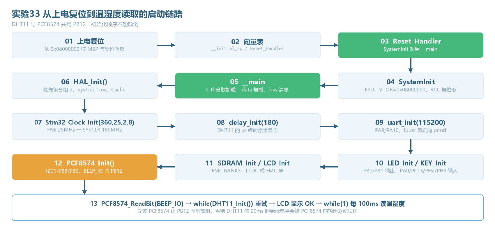
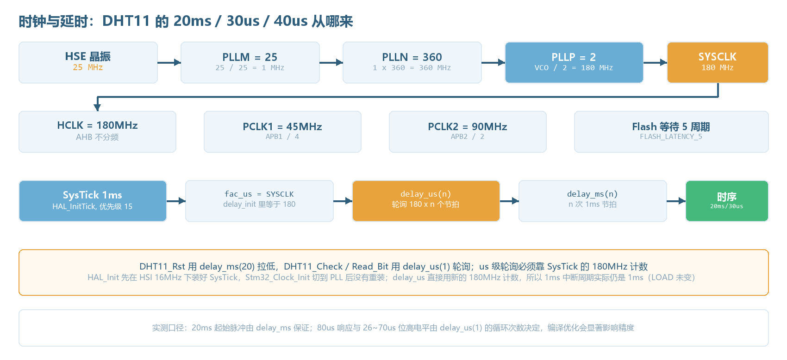
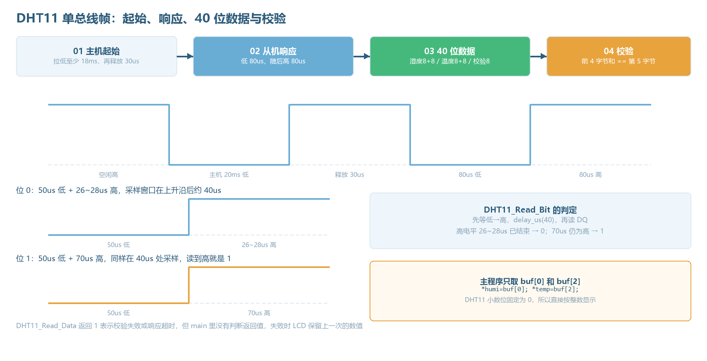
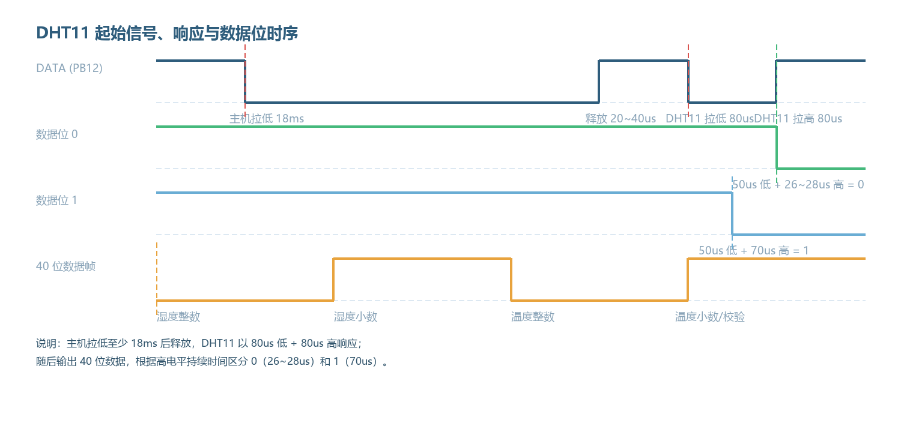
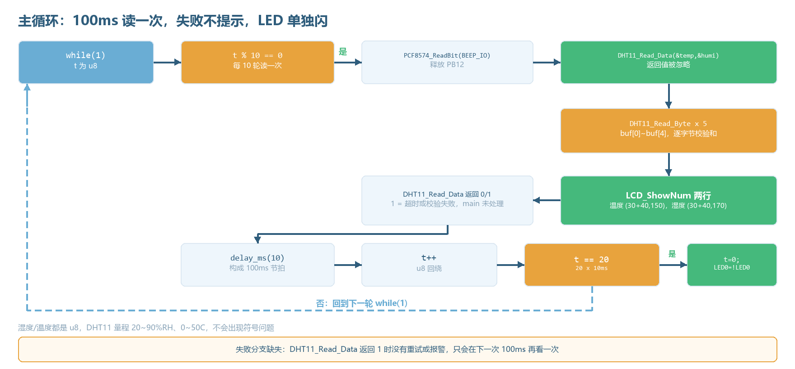

01 实验目标与硬件资源
DHT11 与 DS18B20 同为单总线器件，但协议完全不同：DS18B20 是“命令 + 暂存器”，DHT11 是“一次起始信号 + 固定 40 位数据帧”。它没有寄存器地址、没有 ROM 码，也不能只读温度或只读湿度——每次必须把 40 位全部读完。
| 资源 | 引脚 / 外设 | 在工程中的落点 |
|---|---|---|
| DHT11 数据线 DQ | PB12，上拉，可切换输入/输出 | dht11.h 的 DHT11_IO_IN/OUT、PBout(12)、PBin(12) |
| 上拉电阻 | 板载上拉 | 释放总线后靠它把 DQ 拉高 |
| 共享引脚 | PB12 同时是 PCF8574 的 INT | pcf8574.h 的 PCF8574_INT PBin(12) |
| 状态指示灯 | PB0 / PB1（DS0 / DS1） | LED_Init()，主循环翻转 LED0 |
| 按键 | PA0 / PC13 / PH2 / PH3 | KEY_Init()，本实验不参与 |
| 显示 | LCD（FMC 或 LTDC 屏） | SDRAM_Init() → LCD_Init() |
| 串口 | USART1，PA9/PA10，115200 | uart_init()，printf 重定向 |
buf[0] 与 buf[2]。不要按 DS18B20 的 0.1℃ 思路去理解它。02 目录与文件分工
| 目录 / 文件 | 职责 | 本实验需要关注的点 |
|---|---|---|
CORE/startup_stm32f429xx.s | 栈堆定义、向量表、Reset_Handler | 栈 0x400、堆 0x200；跳 __main |
USER/system_stm32f4xx.c | SystemInit：FPU、VTOR | 本实验无浮点运算，FPU 打开但用不到 |
USER/main.c | 初始化顺序与主循环 | 含 PCF8574_Init 与释放 PB12 |
USER/stm32f4xx_it.c | 内核异常与 SysTick 入口 | 本实验没有任何外设中断 |
SYSTEM/sys | 位带宏、时钟初始化 | PBout(12) / PBin(12) 的位带展开 |
SYSTEM/delay | SysTick 轮询延时 | 起始信号的 20ms、释放的 30us 都靠它 |
SYSTEM/usart | USART1 与 printf 重定向 | fputc 逐字节发送 |
HARDWARE/DHT11 | 单总线驱动 | Rst/Check/Read_Bit/Read_Byte/Read_Data |
HARDWARE/PCF8574 | I2C 扩展 IO | 本工程只用到 PCF8574_Init 与 PCF8574_ReadBit |
HARDWARE/LCD、SDRAM、LED、KEY | 板级外设 | 显示与指示灯，不参与时序 |
DHT11_Read_Data() 内部把起始信号、响应、40 位读取、校验和全部走完才返回。03 启动流程总览

main 的初始化顺序
int main(void)
{
u8 t=0;
u8 temperature;
u8 humidity;
HAL_Init(); // 初始化HAL库：优先级分组、SysTick
Stm32_Clock_Init(360,25,2,8); // 设置时钟,180Mhz
delay_init(180); // 初始化延时函数
uart_init(115200); // 初始化USART
LED_Init(); // 初始化LED
KEY_Init(); // 初始化按键
SDRAM_Init(); // 初始化SDRAM
LCD_Init(); // 初始化LCD
PCF8574_Init(); // 初始化PCF8574
POINT_COLOR=RED;
LCD_ShowString(30,50,200,16,16,"Apollo STM32F4/F7");
LCD_ShowString(30,70,200,16,16,"DHT11 TEST");
LCD_ShowString(30,90,200,16,16,"ATOM@ALIENTEK");
LCD_ShowString(30,110,200,16,16,"2016/1/16");
PCF8574_ReadBit(BEEP_IO); // 先释放 PB12，再初始化 DHT11
while(DHT11_Init()) // 返回 1 表示没检测到器件
{
LCD_ShowString(30,130,200,16,16,"DHT11 Error");
delay_ms(200);
LCD_Fill(30,130,239,130+16,WHITE);
delay_ms(200);
}
// ... 显示 OK 并进入 while(1)，见第 10 节
}
- 初始化顺序与实验32 逐行对应：只是把
ds18b20.h换成dht11.h，把DS18B20_Init换成DHT11_Init。 - PCF8574 仍在 DHT11 之前：PB12 与 PCF8574 的 INT 共用，必须先配置 I2C 扩展芯片，才能通过读 IO 释放引脚。
- 释放 PB12 是硬性前置条件：main.c 注释写明了这一点（注释末尾误写成 “否则初始化DS18B20会出问题”，实际是 DHT11 工程）。
while(DHT11_Init())是死等重试：检测不到器件就一直在 LCD 上闪 “DHT11 Error”。- 初始化阶段没有开任何外设中断，唯一异步来源是 HAL 的 SysTick。
04 启动文件与向量表
Stack_Size EQU 0x00000400
AREA STACK, NOINIT, READWRITE, ALIGN=3
Stack_Mem SPACE Stack_Size
__initial_sp
Heap_Size EQU 0x00000200
AREA HEAP, NOINIT, READWRITE, ALIGN=3
__heap_base
Heap_Mem SPACE Heap_Size
__heap_limit
PRESERVE8
THUMB
- 栈 0x400 = 1KB，堆 0x200 = 512B。本实验局部变量只有
buf[5]与几个 u8，栈压力很小。 __initial_sp紧贴栈顶，链接器把它填进向量表第 0 项；复位时 Cortex-M4 硬件自动装入 MSP。PRESERVE8要求 8 字节栈对齐，调用__main前由启动代码保证。
Reset_Handler
Reset_Handler PROC
EXPORT Reset_Handler [WEAK]
IMPORT SystemInit
IMPORT __main
LDR R0, =SystemInit
BLX R0
LDR R0, =__main
BX R0
ENDP
- 顺序固定：SystemInit → __main。前者只做芯片级最小初始化，后者是 ARM C 库入口，负责搬 .data、清 .bss，再调用
main()。 - 启动文件里没有手写 copy/zero 循环，分散加载由 Keil 的
__main完成；换 GCC 时对应LoopCopyDataInit。 - 本实验不使用外设中断，向量表里与本实验相关的项只有
SysTick_Handler，其实现只调用HAL_IncTick()。
向量表基址
void SystemInit(void)
{
#if (__FPU_PRESENT == 1) && (__FPU_USED == 1)
SCB->CPACR |= ((3UL << 10*2)|(3UL << 11*2)); /* set CP10 and CP11 Full Access */
#endif
#ifdef VECT_TAB_SRAM
SCB->VTOR = SRAM_BASE | VECT_TAB_OFFSET;
#else
SCB->VTOR = FLASH_BASE | VECT_TAB_OFFSET; /* Vector Table Relocation in Internal FLASH */
#endif
}
FLASH_BASE = 0x08000000，VECT_TAB_OFFSET = 0x00，所以 VTOR 指向 0x08000000。DHT11 的换算全是整数运算，FPU 是否打开对本实验没有影响。05 SystemInit 与 HAL_Init
SystemInit 在 __main 之前执行，此时 .data/.bss 还没准备好，所以它只能碰寄存器和 Flash，不能调用 HAL 或使用全局变量。它把 FPU 打开、VTOR 设到 Flash 首地址。
HAL_StatusTypeDef HAL_Init(void)
{
HAL_InitTick(TICK_INT_PRIORITY); // 先用 HSI 装 1ms SysTick
HAL_MspInit(); // 板级最低层初始化，本工程为空实现
return HAL_OK;
}
HAL_Init内部调用HAL_NVIC_SetPriorityGrouping(NVIC_PRIORITYGROUP_2)：2 位抢占 + 2 位子优先级；本实验没有外设中断，这一项不影响功能。HAL_InitTick此时用的还是 HSI 16MHz，装出来是 1ms；Stm32_Clock_Init切到 180MHz 后工程没有重装 SysTick 的 LOAD，HAL 的 1ms 节拍因此不准。- 本实验完全不用
HAL_Delay()，起始信号与位读取全部依赖delay_ms/delay_us，所以这个缺陷不影响功能。
HAL_Delay() 和 delay_ms()：前者依赖 SysTick 中断，后者是忙等，两者对当前时钟的假设不同，混用会出现“同一数值、不同时长”。06 时钟、延时与串口

PLL 参数
RCC_OscInitStructure.OscillatorType=RCC_OSCILLATORTYPE_HSE; // 时钟源为HSE RCC_OscInitStructure.HSEState=RCC_HSE_ON; // 打开HSE RCC_OscInitStructure.PLL.PLLState=RCC_PLL_ON; // 打开PLL RCC_OscInitStructure.PLL.PLLSource=RCC_PLLSOURCE_HSE; // PLL时钟源选择HSE RCC_OscInitStructure.PLL.PLLM=pllm; // 25 RCC_OscInitStructure.PLL.PLLN=plln; // 360 RCC_OscInitStructure.PLL.PLLP=pllp; // 2 RCC_OscInitStructure.PLL.PLLQ=pllq; // 8 ret=HAL_RCC_OscConfig(&RCC_OscInitStructure); ... ret=HAL_PWREx_EnableOverDrive(); // 180MHz 必须开 Over-Drive ... RCC_ClkInitStructure.AHBCLKDivider=RCC_SYSCLK_DIV1; // HCLK = 180MHz RCC_ClkInitStructure.APB1CLKDivider=RCC_HCLK_DIV4; // PCLK1 = 45MHz RCC_ClkInitStructure.APB2CLKDivider=RCC_HCLK_DIV2; // PCLK2 = 90MHz ret=HAL_RCC_ClockConfig(&RCC_ClkInitStructure,FLASH_LATENCY_5);
- 算式：
25MHz / M(25) = 1MHz，1MHz × N(360) = 360MHz，360MHz / P(2) = 180MHz；Q=8 得到 45MHz 给 USB/SDIO。 - 180MHz 超过 168MHz 档，必须先
HAL_PWREx_EnableOverDrive()，否则 PLL 切不过去。 - Flash 5 个等待周期对应 180MHz、3.3V 的 6 CPU 周期；少设会取指错，多设会白掉性能。
delay_init：只设 fac_us，不改 LOAD
void delay_init(u8 SYSCLK)
{
HAL_SYSTICK_CLKSourceConfig(SYSTICK_CLKSOURCE_HCLK); // SysTick频率为HCLK
fac_us=SYSCLK; // 180，1us 的节拍数
}
非 OS 版本里 delay_us(n) 记录进入时的 SysTick->VAL，累加 n × fac_us 个节拍，靠 24 位递减计数器的回绕判断是否走完。它不关中断、不依赖 SysTick 中断。
fac_us = 180表示 1us 有 180 个 HCLK 节拍，因为 SYSCLK = HCLK = 180MHz。delay_ms(20)实际是 20 次delay_us(1000)，每次累加 180000 个节拍，20 次即 360 万个节拍，约 20ms。- 因为不关中断，SysTick 中断可能插进延时中间，把实际时间拉长。DHT11 的 40us 采样点对这一点比较敏感，若读数偶发全 0，应优先考虑关中断或缩短临界段。
printf 重定向
int fputc(int ch, FILE *f)
{
while((USART1->SR&0X40)==0); // 等待发送缓冲空
USART1->DR=(u8)ch;
return ch;
}
_sys_exit 而卡死。本实验的 printf 只用于调试，主循环里没有打印。07 DHT11 硬件与 PB12 方向切换
DHT11 与 DS18B20 在电气层几乎一样：一根 DQ、一个上拉、主机需要动态切换方向。dht11.h 里的四个宏与实验32 完全同构，只是名字换了。
//IO方向设置
#define DHT11_IO_IN() {GPIOB->MODER&=~(3<<(12*2));GPIOB->MODER|=0<<(12*2);} // PB12输入模式
#define DHT11_IO_OUT() {GPIOB->MODER&=~(3<<(12*2));GPIOB->MODER|=1<<(12*2);} // PB12输出模式
#define DHT11_DQ_OUT PBout(12) // 位带写 ODR12
#define DHT11_DQ_IN PBin(12) // 位带读 IDR12
- MODER 每个引脚占 2 位，位号 12 对应
bit13:12；3<<24清掉这两位，再写入0b00（输入）或0b01（通用输出）。 - 宏只改 MODER，不改 OTYPER/PUPDR：推挽与上拉由
DHT11_Init一次性配好，切换方向时不会丢。 PBout/PBin是位带别名，读写在别名区完成，单条指令即可，不会读改写整个 ODR/IDR。
初始化：先配输出，再发起始信号探测
u8 DHT11_Init(void)
{
GPIO_InitTypeDef GPIO_Initure;
__HAL_RCC_GPIOB_CLK_ENABLE(); // 开启GPIOB时钟
GPIO_Initure.Pin=GPIO_PIN_12; // PB12
GPIO_Initure.Mode=GPIO_MODE_OUTPUT_PP; // 推挽输出
GPIO_Initure.Pull=GPIO_PULLUP; // 上拉
GPIO_Initure.Speed=GPIO_SPEED_HIGH; // 高速
HAL_GPIO_Init(GPIOB,&GPIO_Initure); // 初始化
DHT11_Rst();
return DHT11_Check(); // 0=存在，1=不存在
}
DHT11_Init 返回 1 表示失败，所以 main 里写的是 while(DHT11_Init())。注意 DHT11_Check 内部的注释写成“设置为输出”，实际调用的是 DHT11_IO_IN()，以代码为准。08 起始信号与响应

void DHT11_Rst(void)
{
DHT11_IO_OUT(); // 设置为输出
DHT11_DQ_OUT=0; // 拉低DQ
delay_ms(20); // 拉低至少18ms
DHT11_DQ_OUT=1; // DQ=1，释放总线
delay_us(30); // 主机拉高20~40us
}
u8 DHT11_Check(void)
{
u8 retry=0;
DHT11_IO_IN(); // 切输入，准备采样
while (DHT11_DQ_IN&&retry<100) // DHT11会拉低40~80us
{
retry++;
delay_us(1);
}
if(retry>=100)return 1;
else retry=0;
while (!DHT11_DQ_IN&&retry<100) // 拉低后再次拉高40~80us
{
retry++;
delay_us(1);
}
if(retry>=100)return 1;
return 0;
}
- 起始信号要求主机拉低 至少 18ms，工程用
delay_ms(20)；随后释放并保持高 20~40us，工程给 30us。 - DHT11 检测到起始信号后，先拉低总线约 80us，再拉高约 80us 作为响应；两段都落在 40~80us 区间内。
DHT11_Check的两个超时都是 100us：第一个等高→低（响应开始），第二个等低→高（响应结束）。100us 覆盖了 80us 上限。- 与 DS18B20 的 200/240us 双超时相比，DHT11 的两段都更短，所以超时值也必须更小；照抄 DS18B20 的参数会误判。
- 响应结束后总线为高，紧接着就是 40 位数据，每一位都以 50us 低电平开始。
DHT11_Check 一直返回 1，先量 PB12 在释放后是否回到高电平。DHT11 模块常见问题是供电不足（3.3V 可以，但长线压降大）与上拉缺失。09 位读取与字节组装
u8 DHT11_Read_Bit(void)
{
u8 retry=0;
while(DHT11_DQ_IN&&retry<100)//等待变为低电平
{
retry++;
delay_us(1);
}
retry=0;
while(!DHT11_DQ_IN&&retry<100)//等待变高电平
{
retry++;
delay_us(1);
}
delay_us(40);//等待40us
if(DHT11_DQ_IN)return 1;
else return 0;
}
u8 DHT11_Read_Byte(void)
{
u8 i,dat;
dat=0;
for (i=0;i<8;i++)
{
dat<<=1;
dat|=DHT11_Read_Bit();
}
return dat;
}
- 每一位的固定结构是：50us 低电平 + 高电平（0 为 26~28us，1 为 70us）。代码先等高→低，再等低→高，正好跳过 50us 低电平段。
- 采样点固定在高电平开始后 40us：0 的高电平早已结束（26~28us），读到低；1 的高电平还有 30us（70us），读到高。
- 40us 是这段代码的关键常数。若延时偏慢（例如中断插队），可能把 1 读成 0；若偏快，可能把 0 读成 1。
- 字节组装是 MSB first：先
dat<<=1腾出最低位，再把新位或进去。这与 DS18B20 的 LSB first 正好相反。
while 的 retry 上限都是 100us，用来防止器件掉线时死等。正常时序下每段只有 50us 左右，不会触发超时。
10 数据帧、校验与主循环显示

DHT11_Read_Data：一次读完整帧
u8 DHT11_Read_Data(u8 *temp,u8 *humi)
{
u8 buf[5];
u8 i;
DHT11_Rst();
if(DHT11_Check()==0)
{
for(i=0;i<5;i++)//读取40位数据
{
buf[i]=DHT11_Read_Byte();
}
if((buf[0]+buf[1]+buf[2]+buf[3])==buf[4])
{
*humi=buf[0];
*temp=buf[2];
}
}else return 1;
return 0;
}
- 帧结构：
buf[0]湿度整数、buf[1]湿度小数、buf[2]温度整数、buf[3]温度小数、buf[4]校验和。 - 校验规则：前 4 个字节相加，取低 8 位与
buf[4]比较；相等才把湿度、温度写入调用者的变量。 - 校验失败时不会返回 1：代码只跳过赋值，仍然执行到
return 0。也就是说“读失败”和“校验失败”在返回值上无法区分。 *humi=buf[0]、*temp=buf[2]只取整数部分，DHT11 的小数位固定为 0，所以 LCD 上不显示小数。- 指针参数是输出参数，函数不分配内存；
buf是栈上的 5 字节数组。
主循环：t%10 控制读取节奏
PCF8574_ReadBit(BEEP_IO); // 读一次PCF8574，释放PB12 while(DHT11_Init()) { LCD_ShowString(30,130,200,16,16,"DHT11 Error"); delay_ms(200); LCD_Fill(30,130,239,130+16,WHITE); delay_ms(200); } LCD_ShowString(30,130,200,16,16,"DHT11 OK"); POINT_COLOR=BLUE; LCD_ShowString(30,150,200,16,16,"Temp: C"); LCD_ShowString(30,170,200,16,16,"Humi: %"); while(1) { if(t%10==0) // 每100ms读取一次 { PCF8574_ReadBit(BEEP_IO); // 再次释放PB12 DHT11_Read_Data(&temperature,&humidity); // 返回值未被判断 LCD_ShowNum(30+40,150,temperature,2,16); // 显示温度 LCD_ShowNum(30+40,170,humidity,2,16); // 显示湿度 } delay_ms(10); t++; if(t==20) { t=0; LED0=!LED0; } }
t%10==0配合delay_ms(10)，实现“每 10 轮读一次”，周期约 100ms；DHT11 本身建议采样间隔不小于 1s，这里的刷新更多是演示。- 每次读之前都调用
PCF8574_ReadBit(BEEP_IO)，持续保证 PB12 不被 PCF8574 的 INT 拉住。 - 工程未判断
DHT11_Read_Data的返回值：读失败时temperature/humidity保持上一次的值，LCD 上看不出异常；这是本工程最值得改进的地方。 - LCD 上 “Temp: C” 与 “Humi: %” 预留了数字位置，
LCD_ShowNum从固定坐标写入两位数字，不会覆盖单位。 t是 u8，到 20 清零并翻转 LED0，约 200ms 一次，用来证明主循环还在跑。
交互演示（仅演示逻辑）
t%10==0、DHT11_Read_Data 的校验和分支、LCD 显示与 t==20 翻转 LED 的逻辑，不模拟真实单总线时序。| 操作 | 可观察现象 |
|---|---|
| 上电 | LCD 显示 4 行固定字符串，随后 “DHT11 OK”，Temp/Humi 行等待数字 |
| 运行约 100ms | 温度与湿度数字出现，之后每 100ms 刷新 |
| 对着传感器哈气 | 湿度上升较快，温度缓慢变化 |
| 拔掉传感器后复位 | LCD 一直闪 “DHT11 Error”，程序停在初始化循环 |
| 运行约 200ms | DS0 翻转一次，说明 t==20 分支被执行 |
11 中断、临界区与共享引脚
DHT11 的读取同样是纯阻塞轮询：DHT11_Read_Data() 内部把起始信号、响应、40 位、校验和一次走完，期间 CPU 不做别的事。工程没有使用任何定时器或外部中断。
void SysTick_Handler(void)
{
HAL_IncTick(); // 本实验唯一会打断位读取的 ISR
}
- SysTick 中断每 1ms 左右进一次，执行
HAL_IncTick()只需几条指令；若正好落在delay_us(40)内，采样点会略晚。 - DHT11 的 0/1 判别窗口只有约 40us 的余量，比 DS18B20 更窄；工程化时建议在 40 位读取期间关中断。
- 共享引脚：
pcf8574.h把PCF8574_INT定义为PBin(12)，与 DHT11 的 DQ 是同一个物理引脚。 - 每次读之前调用
PCF8574_ReadBit(BEEP_IO)读一次扩展 IO，使 PCF8574 撤销 INT 低电平，PB12 才能回到上拉高电平。
pcf8574.h，PCF8574_ReadBit 的具体实现未在本目录中出现。能确认的只有宏定义 BEEP_IO = 0 与 PCF8574_INT = PBin(12)，以及 main.c 中“读一次任意 IO 释放 PB12”的注释。12 关键逻辑复盘
- 时基先行：HAL_Init 建 SysTick，Stm32_Clock_Init 把时钟拉到 180MHz，delay_init 记录 fac_us=180；三者顺序错了，20ms 与 30us 都会失真。
- 先释放共享脚：PCF8574_Init → PCF8574_ReadBit(BEEP_IO) → DHT11_Init，这个顺序由硬件连线决定。
- 起始信号靠宽度：拉低 20ms 远大于手册要求的 18ms，释放后保持 30us 高，随后等 80us 低 + 80us 高响应。
- 位判别靠采样点：每位 50us 低 + 26~28us 或 70us 高；在高电平开始后 40us 采样，正好落在 0 与 1 的分界之外。
- MSB first：
dat<<=1后或入新位，与 DS18B20 的 LSB first 相反，不能照搬。 - 校验和：前 4 字节相加取低 8 位与第 5 字节比较，相等才更新输出变量。
- 只取整数：
*humi=buf[0]、*temp=buf[2]，DHT11 的小数位固定为 0，显示不做小数处理。 - 工程简化：返回值未判断、校验失败不报错、无 CRC、无临界区，这四点都是教学代码的简化。
DHT11_Read_Data 返回值并在失败时保留/标记旧值、区分“校验失败”与“无响应”、把 40 位读取段放进临界区。13 常见问题排查
| 现象 | 优先怀疑 | 定位方法 |
|---|---|---|
| LCD 一直闪 DHT11 Error | PB12 被 PCF8574 INT 拉住 / 器件未接 | 确认 PCF8574_ReadBit(BEEP_IO) 已执行，量 PB12 静态电平 |
| 温湿度一直是 0 | 40 位全读成 0 / 采样点太早 | 在 Read_Data 里打印 buf[0..4] 原始值 |
| 数值长期不变 | 校验和失败，输出变量未更新 | 打印 4 字节和与 buf[4]，确认是否相等 |
| 偶尔跳变 | SysTick 打断 40us 采样 | 在 40 位读取段关中断后复测 |
| 湿度合理、温度异常 | 字节序理解错误 | 确认 buf[2] 是温度整数，不是 buf[1] |
| 只有单位没有数字 | LCD 坐标写错 | 核对 30+40 的列坐标与两位数字宽度 |
14 总结
实验33 的核心是固定长度数据帧：主机拉低 20ms 发起始信号，DHT11 用 80us 低 + 80us 高响应，随后输出 5 个字节；代码靠“50us 低 + 高电平宽度”逐位判别，在高电平开始后 40us 采样，MSB first 组装，最后用校验和确认整帧有效。整条链路没有中断参与，读一次就是一次阻塞调用。
从启动角度看，它和实验32 的骨架逐行对应：启动文件给栈和向量表，SystemInit 打开 FPU 与 VTOR，HAL_Init 建时基，Stm32_Clock_Init 拉时钟，delay/uart 提供基础设施，然后是 PCF8574 与 DHT11 的板级初始化。真正的差别只在驱动层：一个读暂存器并做 0.625 换算，一个读 40 位并做校验和。
DHT11_Read_Data 返回值并在 LCD 上显示 “ERR”、把读取间隔改为 1s 以符合器件规格、在 40 位读取段关中断提高稳定性，或改用 DHT22 获得 0.1℃/0.1% 的分辨率。